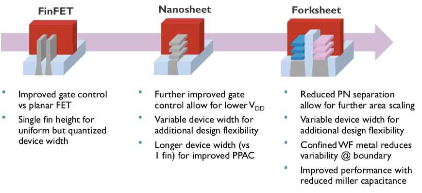

微电子工艺
Silicon Preparation 晶圆制备
why Silicon？适合制备大尺寸晶圆、良好电学特性、地壳丰富、良好的SiO2绝缘层
当前最主流制备多晶硅的方法是“改良西门子法”，其余方法有硅烷法，冶金法
CMOS器件一般制备在100晶向的硅片上，这是因为100晶向的硅片表面悬挂键、界面态和缺陷比较少，在上面集成MOS管界面态更好，更利于控制沟道（Vth好控制），且迁移率更高。
单晶硅的制备
集成电路使用的电子级单晶硅片的制备流程： 硅砂（三步氧化还原反应）--多晶硅--使用FZ或者CZ方法--单晶硅柱--打磨--定向--切片--抛光--打标--边缘处理--清洗--检测--单晶硅片
过程主要的杂质是O和C，可能会导致泄露电流导致器件失效
为了制备低杂质的单晶Si，使用Float Zone Growth，比CZ法更好
常见制备GaAs晶圆的方法是 LEC 技术， 射频器件HEMT
SiC晶圆：宽禁带，击穿电场更高，耐高温，适合功率器件，用作GaN的衬底，或者是JFET
GaN一般应用于射频和功率器件，异质结双极性晶体管
分凝法 拉单晶过程，晶体从熔体中拉出来时，进入晶体的掺杂浓度通常和融体中不同，杂质会被排斥到融体中，融体中的杂质会逐渐增加，利用这个原理，可以对单晶硅进行不断地提纯。靠近融体一侧的C杂质浓度更高。当分凝系数小于1的时候可以使用该方法进行提纯。
CZ法：在石英坩埚中融化多晶硅，使用单晶种慢慢接触融化晶体，然后一边旋转一边向上拉动，形成大的单晶硅棒。该方法可以制备大尺寸晶圆，工艺成熟产量大成本低，但存在杂质问题。 FZ法：将多晶硅棒垂直放置，不使用坩埚，高频感应线圈在硅棒中局部高温熔化，逐步移动熔区使得熔化部分重新结晶为单晶。该方法没有接触坩埚，可以获得极高纯度的单晶。
Epitaxy and Thin Film Deposition 外延和薄膜生长
半导体制造工艺三大核心设备：薄膜沉积、光刻和刻蚀设备 Epitaxy：外延生长，在单晶衬底，按照衬底晶向生长单晶薄膜的工艺过程
为什么要进行外延生长： 提高器件性能：外延层可以定制掺杂浓度和类型 形成特殊的结构：如异质结构 精确控制材料参数：如薄膜厚度和掺杂浓度分布 降低缺陷密度 可以获得洁净的新表面，平整的表面
Growth V.S. Deposition 沉积侧重于在晶圆表面使用物理或者化学的方法沉积一层材料，不依赖于基底结构，不强调特定的晶向对齐。常用的方法有PVD和CVD。 生长侧重于在晶体基底上有序地延展生长，通常是外延生长，是在原有的晶向上继续延展。常用方法有VPE和MBE。具体来说包括金属有机化合物化学气相外延、分子束外延、原子层外延、等离子体增强外延、气相外延。
| 特性 | CVD (Chemical Vapor Deposition) | PVD (Physical Vapor Deposition) |
|---|---|---|
| 原理 | 依靠气体前驱体在高温下发生化学反应，沉积固体薄膜 | 通过物理方式（蒸发或溅射）释放原子沉积成膜 |
| 沉积方式 | 化学反应控制 + 气体扩散 | 物理释放 + 冷凝沉积 |
| 材料形态 | 气相反应物（通常为有毒/腐蚀性气体） | 固体靶材 |
| 设备环境 | 通常为高温、低压反应腔 | 真空腔室（可为高真空或超高真空） |
| 成膜形貌 | 非常致密、均匀且可 conformal（覆盖凹槽/孔） | 覆盖性差，阴影效应明显，适用于平面结构 |
| 常用于材料 | 介质（如 SiO₂、Si₃N₄）、金属（如 W、TiN）、多晶硅 | 金属（如 Al、Cu、Ti）、导电薄膜、反射层等 |
| 温度要求 | 较高（\~300–1000°C） | 可低温（\~室温–300°C） |
| 适合结构 | 高纵深比结构（如沟槽、孔） | 平坦或简单结构 |
| 批量处理能力 | 好（可多片同时处理） | 通常为片对片处理 |
| 成本/安全性 | 气体有毒/腐蚀性，成本较高、安全性差 | 相对安全，气体处理简单 |
| 工艺复杂度 | 高（需考虑化学反应动力学、气体输运等） | 较简单 |
CVD Chemical Vapour Deposition 化学气相沉积
CVD 是一种在高温下通过气体反应生成固态薄膜的技术，具有沉积均匀性好、可控性强、适用材料广泛等优势，在微电子制造中被广泛使用。
过程通常是气体混合注入反应腔体，气体扩散到基底表面，吸附到表面，然后发生化学反应，产生一系列副产品，副产品被解吸附并被排出腔体。CMOS工艺一般采用PECVD，等离子增强CVD，因为温度低。晶圆外延生长需要一个比较洁净的表面，这个表面可以通过一开始的attacking刻蚀过程获得（温度等参数可以控制过程是以刻蚀还是沉积为主）
缺点：有一些材料找不到合适的化学反应，不合适一个混合材料的沉积
同质外延：外延层和衬底是同一种材料，工艺简单但是成本比较高 异质外延：外延层和衬底不是一种材料，工艺复杂但是成本低？ 极限厚度：晶体不匹配的情形下，应变层外延厚度增加时，表面晶格处存在应力，在某个临界点，应力累积到不能维持衬底晶格常数的情况下，晶格被破坏释放应力，此时厚度称为临界厚度。晶格被破坏会产生悬挂键和缺陷，影响性能。
化学气相沉积的几种类型
APCVD常压CVD 一般用于厚氧化层生长。 优点：沉积速度快，简单 缺点：均匀性和纯度不如LPCVD Low Pressure CVD 优点：均一平整，高纯度；致密；多个晶圆可以stacking，可以提高吞吐率。 缺点：低沉积率；需要高温进行；需要精确的温度控制。 通常用于多晶硅和介质层的沉积，也就是IC产业。 Metal Organic CVD 高灵活性，可以沉积半导体、金属和介质；但是剧毒，需要非常昂贵的原材料；常用于光电器件，III-V族半导体和一些金属工艺。 Plasma Enhance CVD 等离子体增强CVD技术，使用低温等离子体激光反应气体来沉积薄膜的CVD技术。 优点是可以用在低温场景，缺点是工艺过程的参数非常多，等离子体会损伤材料，膜的质量低于其他的CVD技术，设备成本也高。通常用于介电层的沉积（如SiO2、Si3N4层）
Si工艺一般使用LPCVD进行沉积Poly-Si、隔离层氧化物、高k介质和一部分金属
能带工程：能带工程指的是通过改变化学组分来改变器件的禁带宽度。用于异质结制备，laser二极管。 Lattic Misfit 晶格失配：晶格常数与原始晶格常数的变化比？
Deposition Rate：沉积率通常和温度有关。高温瓶颈是气体迁移率，低温瓶颈是表面的反应速率
ALD Atomic Layer Deposition
可以视作是化学气相沉积的一种方式，可以做到原子级别控制，表面非常平整。ALD可以适用于多种不同的材料。
外延沉积的一般要求
- 表面准备 需要有一个洁净的表面，防止缺陷复制。可以使用HF酸进行表面处理，形成Si-H键
- 表面迁移率 需要高温，只有超过一个临界温度，表面的原子才是有序整齐的，提供足够的能量使得原子迁移到晶格位。 需要一个相对较低的生长速率，太快会形成岛状，粗糙表面。
III-V族元素的沉积技术
MBE molecular beam epitaxy 分子束外延
在超高真空中将高纯度材料进行加热蒸发，然后形成的分子束直接射向加热后的衬底 优点： * 原子级别的精确控制 * 可以在比较低温下进行 * 高晶体质量（超高真空环境） 缺点： * 生长速率慢，量产能力差 * 成本高，需要真空环境 * 设备庞大复杂
需要在真空环境下进行，一些常用的真空泵包括：分子泵、机械泵、低温泵和油扩散泵
MOVPE metal organic vapour phase epitaxy 金属有机气相沉积
也可以称为 MOCVD metal organic chemical vapour deposition GaAs，使用Ga(CH3)3和AsH3 GaN，使用Ga(CH3)3和NH3 1、前驱气体的供给，通常包括金属有机化合物和氢化物气体，使用载气驱动进入反应腔体 2、衬底加热 3、发生化学反应，并产生有机副产品。原子排列按照衬底晶格继续生长，实现外延结构形成。 4、副产物的排出
优点： * 高生长速率，适合量产 * 可以实现比较复杂的结构 * 工艺成熟，设备稳定 * 衬底兼容性高
缺点： * 高温要求 * 成本高，有些前驱气体有毒 * 副产物容易污染
| 对比项 | CVD | MOCVD |
|---|---|---|
| 前驱体类型 | 一般为无机气体（如 SiH₄、NH₃、BCl₃ 等） | 使用金属有机化合物（如 TMGa、TMAl）+ 氢化物气体（如 AsH₃） |
| 适用材料 | Si、SiO₂、Si₃N₄、金属薄膜等 | GaAs、InP、GaN、AlGaN、InGaAs 等 III-V 族材料 |
| 目标 | 薄膜沉积为主（可多晶/非晶/单晶） | 外延生长（单晶结构）为主 |
| 反应温度 | 通常较高（\~600–1200℃） | 中高温（\~500–1100℃） |
| 沉积速率 | 高（可达 μm/min） | 适中（\~0.1–5 μm/min） |
| 设备复杂度 | 相对较低，已广泛产业化 | 相对更复杂，尤其是气体控制精度要求高 |
| 典型应用 | MOS器件的氧化层、氮化层、金属层沉积 | LED、激光器、HEMT、量子器件等 III-V 材料生长 |
PVD
Thermal Evaporation 热蒸发
E-beam evaporator 电子束蒸发：电子枪发射高能电子束，轰击靶材，蒸发出来的原子或者分子以气相飞向基底，在基底凝结形成薄膜。该过程在高真空环境中进行。 优点是：相比于传统的热蒸发速率高，可以蒸发高熔点的材料；蒸发纯洁，薄膜质量高；容易控制蒸发速率；可以用于沉积多种的材料；更好进行剥离 缺点是覆盖率一般，是line of sight覆盖；表面比较粗糙
sputtering 溅射 产生等离子体，离子轰击靶材，原子被溅射出来飞向基底，凝结形成薄膜。该过程在低真空环境下进行。等离子体的气体一般选用氩气，因为它的原子量高，动能传递有效；化学惰性，不产生化学反应；无毒安全。
PVD技术的主要问题 * 侧壁沉积薄 * 接触孔底部薄膜不联系 相比之下，CVD技术具有较高的表面迁移能力，形成的表面具有良好的一致性，侧壁和底部覆盖均匀。
Oxidation 氧化
为什么硅大量用于IC技术，因为Si和SiO2之间可以形成很好的界面。特别是100晶向的硅片，Si/SiO2的界面质量更高。 SiO2具有高电介质常量，可以提供一个较高的栅氧电容；高击穿电场；在掺杂过程中可以作为一个天然的mask；使用HF可以很好的刻蚀SiO2；可以作为FOX进行晶体管之间的隔离；可以作为Metal之间的保护层。
Thermal Oxidation
分为干法和湿法
| 项目 | 干法氧化（Dry Oxidation） | 湿法氧化（Wet Oxidation） |
|---|---|---|
| 氧化剂 | 干燥的氧气（O₂） | 水蒸气（H₂O）或氧气加氢气产生的水蒸气 |
| 氧化速率 | 慢 | 快（约快10倍） |
| 氧化温度 | 高（900–1200°C） | 同样是高温（800–1100°C） |
| 氧化层厚度控制 | 精确，适合薄氧化层（<100 nm） | 易于生成厚氧化层（>100 nm） |
| 氧化层质量 | 极高，致密，界面态少 | 相对略低，界面可能存在更多缺陷 |
| 常见应用 | MOSFET的栅氧层、精密器件 | LOCOS场氧化层、钝化层等 |
| 对硅晶体影响 | 损伤小，界面平整 | 潜在应力较大 |
干法 Si + O2 -> SiO2
湿法 Si + 2H2O ->SiO2 + 2H2
影响氧化速率的因素包括： 氧化剂、温度、气体分压、硅晶向（111方向最快），掺杂浓度越高氧化速率越快
LOCOS
英文全称是Local Oxidation of Silicon
工艺流程：
1、在硅片上生长一层薄氧化层（起缓冲作用）；
2、沉积一层氮化硅（Si₃N₄），用作氧化屏蔽层；
3、使用光刻+刻蚀技术，仅在非有源区保留氮化硅；
4、在裸露的区域进行热氧化，即在无Si₃N₄保护的地方生长氧化层；Si₃N₄遮挡的地方几乎不氧化，有源区保持裸硅状态；
5、最后去掉氮化硅，进入后续掺杂/扩散等步骤。
SOI
在Substrate上面构建一个绝缘层Buried Oxide用作支撑。
SOI的优势：
- 低漏电：体区被隔离，漏电流下降，导致功耗也会有所降低
- 抗软错误强：粒子撞击难以引发电荷扩散
- 速度快：寄生电容小，开关速度更快
- 温度适应性强：温度变化对阈值的影响较小
- 没有寄生双极型晶体管效应，也就是没有Latch-up效应
SOI的劣势：
- 成本高
- 散热性较差
- 工艺不通用
制作SOI的方法
- Direct Wafer Bonding
- Smartcut
Photolithography 光刻技术
光刻是将图形转移到substrate的一种光学方法。
Photoresist是一种对光敏感的有机聚合物材料，通过光照后发生化学性质变化，从而实现对硅片表面图案的转移。
光刻过程：1）表面准备HMDS 2）光刻胶旋涂 3）前烘 4）曝光 5）显影 6）后烘 7）检测
下面是具体的介绍：
- Spin旋涂：涂光刻胶过程的几种缺陷：条纹、边缘过厚、裂纹
- Soft Bake 前烘：涂覆厚的光刻胶进行中温加热，使得光刻胶内的溶剂部分挥发，胶层更加稳定，为后续的曝光做好准备；同时可以改善附着力，防止显影或者刻蚀时脱胶。
- Wafer Cooling
- Align and Exposure 曝光
- Develop 显影
- Hard Bake 后烘：彻底去除光刻胶的残余溶剂，使得光刻胶牢固地粘附在表面，提高抗蚀性。如果烘烤不到位，会导致光刻胶的抗蚀性不够；烘烤过度会导致PR流动，降低分辨率。
*Etch 刻蚀
- wet acid etch
- dry plasma etch
Removal (Strip) ：去除光刻胶，可以使用湿法溶解和dry plasma strip
两种光刻胶
- 正胶：光照后溶解，图形和mask一致，分辨率更高
- 负胶：图案与mask相反，成本更低
光刻的三种设备：Contact、Proximity、Steppers。 光刻胶的主要成分是聚合物、溶剂、感光物质和添加剂。 理想的光刻胶应该有高的分辨率、对离子注入和刻蚀的阻挡能力强、好的吸附性
光刻的两个参数
Resolution
分辨率决定了最小的特征尺度。
其中NA是数值孔径，λ是光波长。
Depth of focus（DOF）
增加NA会导致DOF降低，所以我们更倾向于降低波长来提高分辨率。我们还可以使用浸没式光刻，提高n使得NA变高。
光的衍射导致感光区域和mask并不对应，可以通过加透镜/相移掩膜的方法
先进光刻技术
多重曝光技术
浸没式光刻
通过增加n进一步增加NA，减小分辨率
OPC 光学邻近修正
由于衍射效应会导致图形边缘的模糊，使用一些修正技术使得图像边缘更加明辨
Phase Shift Masking
用于改善光刻分辨率和对比度，通过控制光的相位来增强图形边缘清晰度。增加一个180°相位，使得中间暗的区域被抵消掉，暗部更暗。
下一代光刻技术
EUV光刻：光源功率、多层膜反射率等问题，但是已经逐步获得规模应用
X-Ray光刻：掩膜接近1:1且X光穿透性强，掩膜制作困难，成本高；好处是波长更短，高分辨率，几乎没有衍射现象，光刻板寿命更长？
电子束光刻：直接将图形写到光刻胶上面。优点1）是不需要掩膜版2）分辨率比光刻要高，没有衍射效应带来的局限3）可以用来制作光刻使用的掩膜版；缺点是非常慢，成本很高，还有电子散射现象。
微压印技术：难以满足高分辨率和高产率要求，1:1掩膜制备困难，脱模缺陷等问题突出
STM or AFM光刻：直接从原子层面实现结构，无需光刻刻蚀
Etching Process 刻蚀工艺
通过图形化的光刻胶掩膜，将材料从晶圆表面选择性地移除，形成所需要的结构或图形。
干法刻蚀和湿法刻蚀
| 工艺类型 | 特点 | 适用场景 |
|---|---|---|
| 湿法刻蚀（Wet Etch） | 化学溶液中反应，等向性强，容易“咬边” | 制作非关键层、牺牲层去除等 |
| 干法刻蚀（Dry Etch） | 使用等离子体，方向性强，可控性好 | 主流工艺，用于关键层、高精度图形转移 |
等离子刻蚀（干法）
Capacitive Coupled Plasma-CCP，等离子体由RF电流驱动
Inductively Coupled Plasma，两个RF源单独控制离子浓度和能量。这种方法离子浓度更高，损伤更小，低压运行。
湿法刻蚀的各向同性导致垂直性不够好
使用化学方法刻蚀的选择性比等离子体刻蚀要好
干法刻蚀相比于湿法刻蚀的优点：
1、sidewall更加垂直，方向性好，各向异性。
2、较小的光刻胶位移
3、均一性更好
物理刻蚀和化学刻蚀
| 类型 | 优点 | 缺点 |
|---|---|---|
| 物理刻蚀 | 利用高能粒子轰击，各向异性 | 选择性差，速率低 |
| 化学刻蚀 | 利用化学反应使得材料变成可挥发的，各向同性 | 选择性好 速率块 |
Photoresist Removal
- Solvent
- Plasma Ashing 一种常见的方法是等离子体轰击O2形成的氧原子和离化电子对光刻胶进行轰击
- Resist stripping
digital etching
在先进制程中，制备thin等精细结构的一种刻蚀方法。通过在表面生长一层自限的plasma层，然后用酸一层一层地去刻蚀。可以实现超精细结构控制。
CMP
CMP不等同于Lapping，CMP会有一个自动终止的位置。
为什么需要CMP？
- 将不同的层都微缩到一个较小的尺寸；
- 将表面进行平整化处理，便于后续层的光刻刻蚀等操作；
- 用于多层互联和隔离。
CMP的耗材主要有pad和抛光液
互联工艺
铜正在取代Al的互连
| 项目 | 铝互连（Al Interconnect） | 铜互连（Cu Interconnect） |
|---|---|---|
| 电阻率 | 高（约 2.65 μΩ·cm） | 低（约 1.68 μΩ·cm）→ 更快传输 |
| 电迁移可靠性 | 差，容易形成空洞 | 好，不易迁移 → 更高可靠性 |
| 蚀刻方式 | 易蚀刻（干法刻蚀）→ 工艺简单 | 不易蚀刻 → 需用CMP方式图形化 |
| 图形工艺 | 传统“减法工艺”： 沉积 → 光刻 → 刻蚀 |
“镶嵌工艺（Damascene）”： 先刻沟槽 → 镀铜 → CMP |
| 衬底材料兼容性 | 与SiO₂界面稳定 | 与SiO₂会扩散，需加阻挡层（如Ta/TaN） |
| 使用时代 | 主要用于90nm及以前节点 | 90nm及以下主流采用铜 |
Electromigration 电迁移：当导线通过高电流的时候，电子会轰击原子导致原子错位，最终可能会形成空洞，导致互联失效。Al的可靠性比Cu低。
大马士革工艺
由于Cu的刻蚀率比较低，所以一般使用大马士革工艺进行制备
- 沉积绝缘介电层 如 SiO₂、低k材料，用来电气隔离互连金属。
- 光刻并刻蚀沟槽 用光刻+刻蚀方法在介电层中刻出需要布线的位置（沟槽/孔洞）。
- 沉积阻挡层（Barrier Layer） 防止铜扩散进介电层。该层必须要足够的thin。常用材料：Ta/TaN。
- 沉积种子层（Seed Layer） 为后续电镀铜提供导电底层，常用薄铜层。
- 铜电镀（Electroplating） 在种子层上电镀出厚铜层，填满沟槽。
- 化学机械抛光（CMP） 利用CMP去除多余铜和阻挡层，只留下沟槽中的铜线。

互联工艺的low-k材料
使用低k介质，可以减小互连之间的寄生电容，从而提高速度、降低功耗。 比较常用的材料有SiOF（FSG）、OSG（兼容Cu和CMP）
Doping 掺杂
Diffusion 扩散
扩散工艺是利用了高温下杂质原子在硅晶体中的扩散作用，使其从表面向硅片内部扩散，形成一定浓度和分布的杂质分布层。一般用作于MOS源漏的掺杂，不适合很浅或者是浓度很精确的沟道。
掺杂的优点
- 表面损伤小
- 价格低
- 容易获得比较深或者高浓度的结
掺杂的缺点
- 只能形成特定形状（受制于扩散方程）
- 各向同性工艺，总会扩散到掩膜层下方
- 扩散深度和表面浓度相关，不适合超浅结掺杂
- 高温时间长
过程
硅片清洗-氧化-形成刻蚀窗口-光刻胶剥离-硅片清洗-杂质氧化物沉积-扩散推进-氧化物剥离
影响扩散的一些因素包括温度、点缺陷和浓度分布
Two-step diffusion 两步掺杂技术
- 预掺杂：将掺杂剂引入到硅表面，形成一定浓度的掺杂源层。该过程为恒定掺杂浓度扩散。
- Drive-in：恒定掺杂总量扩散。扩散驱动，持续加热更长时间，掺杂剂扩散更深。
薄膜电阻测量：四探针法、霍尔效应法
扩散结深Xj：磨角染色法
杂质浓度分布：C-V法
扩散方法的改进：快速气相掺杂，用于制作超浅结。
Ion Implantation 离子注入
利用高压加速掺杂元素的离子，将其注入到硅片表面，嵌入到晶体内部，形成掺杂区域，最后使用热退火技术恢复损伤，激活掺杂原子。
Channeling effect
某些晶向会形成规则排列的开放通道，当离子沿着这些方向注入的时候，几乎不予晶格原子发生碰撞，能够深入穿透到晶体内部，导致掺杂不均匀。减少沟道效应的方法是：倾斜硅片，预非晶化（使用Si+使得Si表面非晶化）
Post-impant Annealing and Activation
离子注入后需要进行一步额外的退火操作，这是为了修复被损伤的晶格，并且激活那些注入的离子。一种常用的方式是Rapid Thermal Annealing，即快速热退火，可以减少瞬间扩散。还有一种比较新颖的方式是Pulsed Laser Annealing，脉冲激光退火，可以用于制备超浅结。
离子注入法的优缺点
优点：
- 可以精确控制掺杂剂的浓度与分布
- 可以独立控制浓度和结深
- 速度快，工艺时间短
- 通过多重注入实现复杂的分布
- 低温过程
- 各向异性
缺点：
- 很多缺陷无法通过退火进行修复
- 通常比扩散的方法的杂质浓度更高
- 通常会使用一些有毒气体源
- 价格高昂

CMOS工艺集成
Well tap cell是一种连接衬底或阱区到电源/地的结构，能够提供到地的低阻通道，避免Latch-up效应。
CMOS工艺一般采用100晶向的Si，因为表面态密度比较低，对阈值电压的控制比较好。为了进一步提高对阈值电压的控制，还会采用外延生长P-epi（掺杂更均匀，晶格缺陷少，杂质更少）
为什么要外延一个P-epi：1）利于n-well制备 2）降低表面杂质，缺陷，可以提高晶体管性能 3）轻掺杂，便于控制Vth。
为什么现代CMOS工艺采用N-Well CMOS
- 更低的基底偏置效应
- 较低的寄生电容
- NMOS晶体管天然的速度更快。
当然现在也有双阱工艺能够同时结合N-well和P-well的优点。由于N-well工艺，bulk的电压和source的电压是可以相等的，某种程度上消除了基底偏置？再者就是N-well的掺杂浓度更低，会降低体效应参数。而低掺杂会导致耗尽区宽度大，进而降低了寄生电容。
为什么采用Poly-Si：可以用作自对准工艺，后续流程不会融化。
自对准工艺的优点
使用栅极作为掩膜，直接决定源/漏区域的注入位置，从而达到对齐的目的。
- 只需要一个掩膜，工艺变简单
- 大大减少了栅极和源漏之间的交叠电容（因为掺杂不会偏差太多，特别是使用离子注入的方式）
- 能够降低PMOS的工作电压
使用Silicide作为接触物
Silicide例如NiSi是金属和Si形成的化合物，可以在源漏栅进行低电阻接触，可以抗高温退火、自对准、不容易扩散进入Si，可以和Si反应形成接触。
使用Silicide的优点：
- 降低电阻。
- 减少金属和Si沟道之间的电阻，提高开关速度。
- 更稳定的界面，降低金属扩散进入Si。
- 硅化物形成作为缓冲过渡带，减少界面缺陷，提高粘附力。
Silicide形成的过程是自对准的，只需要在已经形成CMOS结构的基础上直接沉积金属，金属和Si接触的地方会形成硅化物，而与SiO2接触的地方则不会。最后直接移除金属即可。
FinFET
为什么要进行持续的微缩化？
1）降低寄生参数，降低功耗
2）提高晶体管的开关速度
3）增加集成度，实现更复杂的功能
4）降低成本
短沟道效应
V-TH Roll off：当沟道太短的时候，D实际上控制了沟道，而不是Gate。
DIBL：漏极导致势垒降低。漏端有电压时会导致沟道势垒的降低，电子直接通过了。 在短沟道的前提下，如果体厚度越大，D对S/沟道的耦合效应越强，栅的控制能力越弱。所以为了降低体厚度，人们研发了SOI晶体管。
FinFET的优点
- 更好的栅极控制能力
- 更大的驱动电流
- 降低了电源功耗：提高栅极控制能力抑制了漏电流和亚阈值导通，显著降低静态功耗
- 迈向了3D集成
FinFET的制作工艺
在缺少高分辨率光刻机的情况下，通常使用多重曝光技术：
1、LELE工艺

2、LFLE工艺
3、SADP工艺
HKMG
High-K介质解决的主要问题：随着沟道长度的缩小，根据等比例缩放原则，Oxide的厚度也需要进一步的下降。但是如果继续使用SiO2作为中介层，厚度将会被缩小到不能被接受，即电子隧穿效应会变得显著，漏电流增加。在保持栅电容不变的情况下，k越高，物理厚度可以越大，有利于降低栅介质漏电
对High-K介质的要求：高介电常数、宽禁带、能够在Si上高纯度生长，形成良好的表面、高热稳定性，与半导体的能带之间的带阶要合适。综合考虑下来，只剩下HfO2和ZrO2，以及他们的硅化物可以和Si进行比较好的结合。
如何生长HfO2？使用ALD。
ZrO2的结晶温度比较低，HfO2的结晶温度相对更高。为了进一步提高结晶温度，可以加入N。
Metal Gate
早期放弃Metal gate而使用Poly Si：可以通过掺杂调控Vth，自对准工艺可以控制扩散区域，热稳定性好，后续工艺的高温不会使得Poly Si融化。
为什么又重新回到了Metal Gate？
1、Poly-Si和High-K介质进行结合时，PolySi表面和HighK材料之间形成了大量的表面态，会捕获电子或者空穴，导致费米能级被钉扎到某个固定位置，无法通过自由掺杂调节Poly-Si的功函数。因而导致了Vth偏移，nMOS和pMOS无法分别优化。
2、多晶硅的耗尽现象比较严重
3、多晶硅中的掺杂原子会扩散进入Si
使用金属的好处
1、没有耗尽现象 2、提高了界面质量，避免了费米能级钉扎现象 3、没有掺杂剂的扩散现象 4、更高的电导
如何选择金属？ PMOS要求高的功函数，NMOS要求小的功函数。需要耐高温。

如果采用Gate-First工艺，那么进行S/D形成的高温会影响金属的性质，所以我们采用Gate-Last工艺，这样还可以利用自对准的优点。
Cu金属互联相比于Al的优势： Cu电阻率低，互联损坏低；Cu熔点更高；RC延时更小，速度更快；热膨胀小；Cu的电迁移小
Strain Engineering
通过施加应力改变晶体结构，从而导致迁移率、有效质量等发生变化，从而提高晶体管的速度。
1、对于PMOS晶体管，通常会施加压应力Verticle Stress，提高空穴的迁移率，常用的方法是生长SiGe。

生长SiGe采用Ultra-high Vacuum CVD工艺，这是因为SiGe极易和O元素发生反应，UHV主要为了降低气体中的氧含量，SiGe源漏阱区的掺杂是通过通入磷烷和硼烷气体实现反应掺杂。在生长SiGe之前需要使用H2进行高温预处理，去除Si表面的一些氧化物、C污染和金属残留等。
这种方法生长出来的Ge含量过高时缺陷比较多，一种改进的方法是渐变分组SixGe1-x。可以获得更高质量的晶体、更少的缺陷、更高的Ge含量。
2、对于NMOS可以采用SiC的方法，增加沿着沟道方向的拉应力和垂直沟道的压应力。该结构还会在源和沟道之间形成一个势垒，降低了低Vds下的电流。
3、可以采用CESL技术分别对NMOS和PMOS采用不同的材料进行施加应力，该方法的缺点是间接施加，效率比较低。
4、SMT技术 Stress Memorization Technology。通过高温退火记住应力层引入的晶格畸变，及时应力源被移除了，但是晶体仍然保持一定的残余应力。
MOS管结构创新
从FinFET到GAA
比较新的nanosheet晶体管
从nanosheet到forksheet，NMOS和PMOS之间的距离被被缩小 
MOS管材料创新
Ge对空穴的迁移率高，III-V族元素对电子的迁移率高，分别替代Si可以显著提高性能

一种典型的高迁移率n型沟道半导体材料 GaAs、lnGaAs
SiC基半导体器件的优势是宽禁带材料、击穿电场更大、迁移率更高、散热更好。